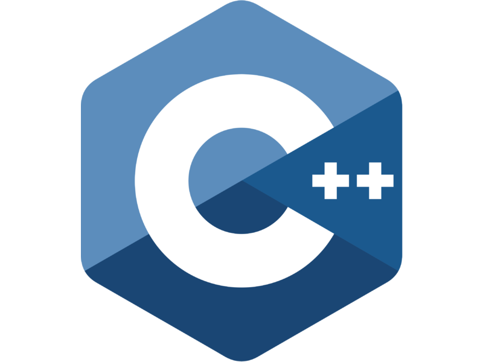

Kim Hoang Do
8527 N Moonfire Dr.
Tucson, AZ 85743
520-230-0507
khdo@usc.edu
Objective

- An experienced engineer with the ability to maintain electrial systems drawing from 8 years of experience fixing and installing electrical componenets. Able to handle multiple projects simultaneously with high professionalism and accuracy.
Education
- BASIS Oro Valley, Oro Valley, AZ
May 2019
- High Honors Graduate, AP Scholar with Distinction
- University of Southern California, Los Angeles, CA
May 2023
- B.S. in Electrical and Computer Engineering
Experience
- NASA Researcher
November 2018 - May 2019
University of Arizona, Lunar and Planetary Laboratory- Examined Mars's 2018 Summer Global Dust Storm
- Conducted data analysis and programed wtih raw data from the Mars's Reconnaissance Orbiter
- Recorded weekly blogs and presented my 18-page research results at a conference at a biotechnology company called Icagen
- YMCA Summer Camp Counselor and Event Project Coordinator
July 2019
Northwest YMCA, Marana, AZ- Instructed and supervised children on outdoor activities and arts and crafts
- Created and managed camp programs that promoted creativity and growth
- Summer School InternJune 2018
Marana Unified School District, Marana, AZ- Tutored K-8th grade students with troubled learning abilities and performed clerical work
- Assisted children with learning subjects such as reading and math in a classroom setting
- Teacher's Assistant August 2016 - Feburary 2019
BASIS Oro Valley, Oro Valley, AZ- Graded homework, quizzes, and tests 3-5 times a week and tutored students during office hours
- Helped the teacher during class lectures and taught a few lessons for the class
Skills
- Technical Skills

- AutoCAD
- C++
- HTML/CSS
- Microsoft Excel, Powerpoint, and Word
- Verbal Languages
- Intermediate in Spanish
- Fluent in English
- Beginner in Vietnamese, Japanese, and Korean
- Soft Skills 
- Teamwork
- Time Management
- Hard-Working
- Organizer